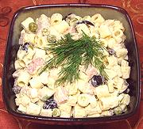

|
Salade BagrationRussia - Salat Bagration | ||||
| Makes: Effort: Sched: DoAhead: |
4-1/2 # ** 12 hrs Best |
This excellent salad is actually the famous Russian Salat Oliv'ye (Olivier Salad) but with Pasta rather than Potatoes. It is named for Pyotr Bagration, hero of the Napoleonic Wars. | |||
|
8 3 7 4 2 1/3 4 14 ---- 3 3 3/4 1/4 1 1/2 1/4 ---- |
oz oz oz c oz oz --- T T c c T t t --- |
Pasta, dry (1) Eggs, large Chicken, cooked Ham, cooked Scallions Peas, frozen (2) Black Olives (3) Apples, tart -- Dressing Olive Oil, ExtV Wine Vinegar, white Mayonnaise (4) Sour Cream Chili Sauce (5) Salt Pepper --------------- |
That this salad is named after Prince / General Pyotr Bagration doesn't mean doesn't mean he ever actually tasted it - lots of things are named after him in Russia. Make - (12 hrs - 45 min work)
|